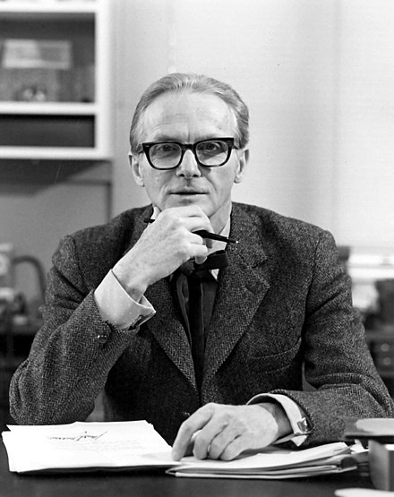
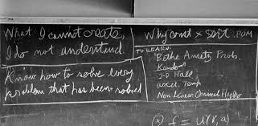

|  | “With a Ph.D. you will have a better chance of spending the rest of your life doing what you want to do, instead of what someone else wants you to do.” - William Lipscomb |
Nobel Laureate in Chemistry William Lipscomb once said: “With a Ph.D. you will have a better chance of spending the rest of your life doing what you want to do, instead of what someone else wants you to do.” I couldn’t agree more, because I prefer to research and develop the most advanced technologies than to study how to implement "obsolete" technologies. With a PhD I am more likely to get interesting and challenging jobs in academia or industry. By pursuing a Ph.D., I believe I can gain the ability to achieve these goals.
My undergraduate experience can be divided into the following three parts, which have given me self-discipline, resilience, skills in communication and planning, and prepared me for research.
Experienced a complete training in scientific research. I Joined Associate Professor Fan Zhou's team in the first semester of my junior year. I’ve worked with a senior on conditional generative models for 4 months and our goal is to apply DDPM, a powerful generative model, efficiently to speech enhancement tasks which traditionally are handled by discriminative models. To address the challenge that generative models are difficult to sample from conditional distributions, we introduced a discriminative auxiliary network to get the prior distribution and re-derived the conditional probability formula, and after experiments we found that our model outperformed the baseline model by nearly 20%, and we have now completed the first draft of the paper and expect to submit it to ICLR 2023. In addition, under the guidance of Associate Professor Deyuan Chen at the University of Chinese Academy of Sciences, I am researching the topic of object detection of dense crowds in point cloud data.
The famous physicist Feynman wrote this sentence on the blackboard on the day he left this life: “What I cannot create, I do not understand.”, which implies the measure of thorough understanding. The deep generative model is the method that emerged from this idea. The relationship between deep generative models and common discriminative models can be analogous to the relationship between joint probability and conditional probability in probability statistics, and a discriminative model can be considered as a simple conditional generative model. Generative models can be applied not only to common discriminative tasks, but also to some challenging inverse problems and interesting generative tasks. Generative models usually face three challenges: representation, learning and inference, which are coupled with each other. In order to generate high quality and diversity of samples, accurate probability density estimates, and to obtain higher-order semantic features, Different models were proposed with different abilities of representation, learning and inference, including fully observed likelihood-based models such as autoregressive models and flow-based models; latent variable models such as variational autoencoders; implicit generative models such as GAN; energy-based models and score-based models. Fully observed likelihood-based models refer to those models that can obtain tractable likelihood functions that can be estimated by MLE. For example, autoregressive models introduce conditional independence through a probability graph model and increase the expressiveness of the model by using neural networks to parameterize the conditional distribution function, which eventually yields a compact representation of the target distribution and facilitates the calculation of the likelihood function and the estimation of the maximum likelihood. However, higher log-likelihood doesn’t necessarily mean better looking samples. The latent variable model supports unsupervised learning by introducing latent variables and defines the target distribution representation flexibly leading to difficulty in maximum likelihood estimation, and usually uses the technique of variational inference for optimization, which cannot obtain the exact likelihood. The implicit generative model GAN is more concerned with the quality of the generated samples and learned through a two-sample test objective function, where the generator is used to minimize the distance from the target distribution and the discriminator is used to tighten the lower bound of the function. These models have their own pros and cons , and how to solve their respective pain points is what needs to be studied in the future. Furthermore, how to optimize the generative model better from theoretical perspective and ensure its generalization ability are important research direction.
To sum up, I want to get my Ph.D. in order to pursue an interesting and challenging career in academia or industry. My undergraduate experience has taught me the self-discipline and tenacity that will give me the confidence to make my own contributions to the field of machine learning especially deep generative models in the future.

feynman's final blackboard